2022 Advanced Higher Physics questions
Source: Scottish Qualifications Authority (SQA) / Qualifications Scotland. This is a StemInteract HTML companion, not an official HTML edition. Selectable text is supplied alongside original page images. Use the images or original PDF for equations, powers, fractions, vector notation, tables and diagrams; text extraction cannot fully preserve mathematical layout.
Jump to a question
PDF page 1
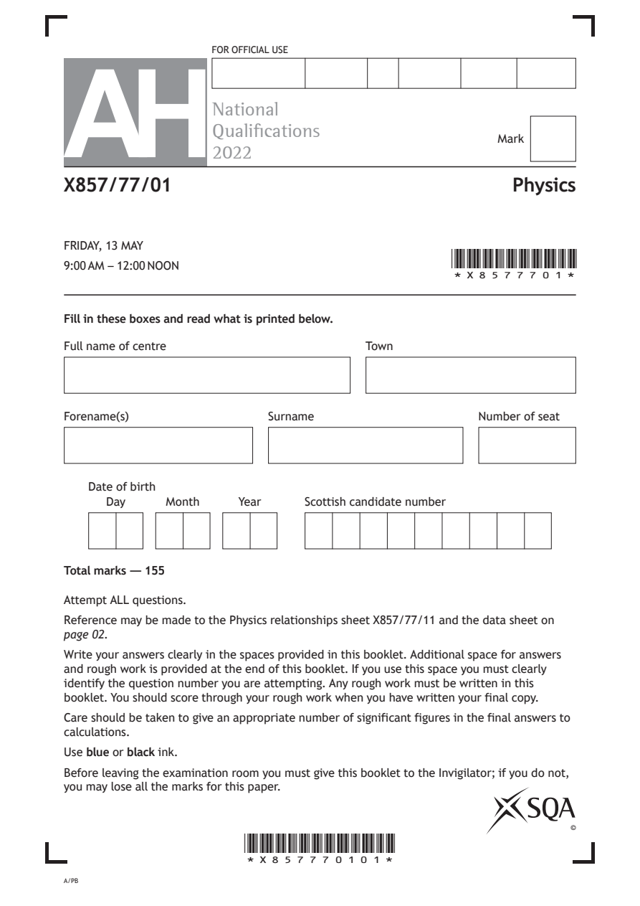
Selectable page text
FOR OFFICIAL USE
AH
National
Qualications
Mark
2022
X857/77/01 Physics
FRIDAY, 13 MAY
9:00 AM – 12:00 NOON
*X8577701*
Fill in these boxes and read what is printed below.
Full name of centre Town
Forename(s) Surname Number of seat
Date of birth
Day Month Year Scottish candidate number
Total marks — 155
Attempt ALL questions.
Reference may be made to the Physics relationships sheet X857/77/11 and the data sheet on
page 02.
Write your answers clearly in the spaces provided in this booklet. Additional space for answers
and rough work is provided at the end of this booklet. If you use this space you must clearly
identify the question number you are attempting. Any rough work must be written in this
booklet. You should score through your rough work when you have written your final copy.
Care should be taken to give an appropriate number of significant figures in the final answers to
calculations.
Use blue or black ink.
Before leaving the examination room you must give this booklet to the Invigilator; if you do not,
you may lose all the marks for this paper.
©
*X857770101*
A/PBPDF page 2
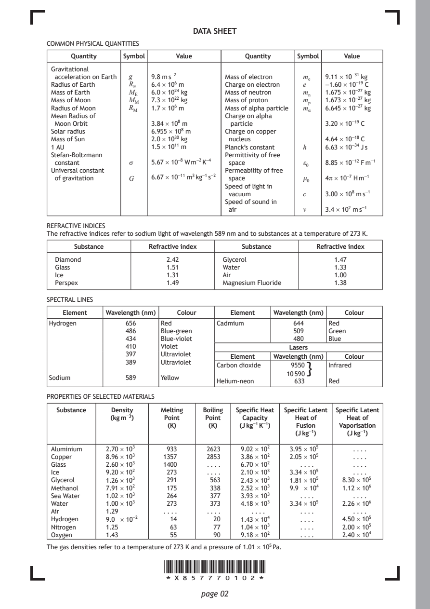
Selectable page text
DATA SHEET
COMMON PHYSICAL QUANTITIES
Quantity Symbol Value Quantity Symbol Value
Gravitational
acceleration on Earth g 9.8 m s⁻² Mass of electron mₑ 9.11 × 10⁻³¹ kg
Radius of Earth R_{E} 6.4 × 10⁶ m Charge on electron e −1.60 × 10⁻¹⁹ C
Mass of Earth M_{E} 6.0 × 10²⁴ kg Mass of neutron mₙ 1.675 × 10⁻²⁷ kg
Mass of Moon M_{M} 7.3 × 10²² kg Mass of proton mₚ 1.673 × 10⁻²⁷ kg
Radius of Moon R_{M} 1.7 × 10⁶ m Mass of alpha particle m_{α} 6.645 × 10⁻²⁷ kg
Mean Radius of Charge on alpha
Moon Orbit 3.84 × 10⁸ m particle 3.20 × 10⁻¹⁹ C
Solar radius 6.955 × 10⁸ m Charge on copper
Mass of Sun 2.0 × 10³⁰ kg nucleus 4.64 × 10⁻¹⁸ C
1 AU 1.5 × 10¹¹ m Planck’s constant h 6.63 × 10⁻³⁴ J s
Stefan-Boltzmann Permittivity of free
constant σ 5.67 × 10⁻⁸ W m⁻² K⁻⁴ space ε₀ 8.85 × 10⁻¹² F m⁻¹
Universal constant Permeability of free
of gravitation G 6.67 × 10⁻¹¹ m³ kg⁻¹ s⁻² space μ₀ 4π × 10⁻⁷ H m⁻¹
Speed of light in
vacuum c 3.00 × 10⁸ m s⁻¹
Speed of sound in
air v 3.4 × 10² m s⁻¹
REFRACTIVE INDICES
The refractive indices refer to sodium light of wavelength 589 nm and to substances at a temperature of 273 K.
Substance Refractive index Substance Refractive index
Diamond 2.42 Glycerol 1.47
Glass 1.51 Water 1.33
Ice 1.31 Air 1.00
Perspex 1.49 Magnesium Fluoride 1.38
SPECTRAL LINES
Element Wavelength (nm) Colour Element Wavelength (nm) Colour
Hydrogen 656 Red Cadmium 644 Red
486 Blue-green 509 Green
434 Blue-violet 480 Blue
410 Violet Lasers
397 Ultraviolet
Element Wavelength (nm) Colour
389 Ultraviolet
Carbon dioxide 9550} Infrared
10 590
Sodium 589 Yellow
Helium-neon 633 Red
PROPERTIES OF SELECTED MATERIALS
Substance Density Melting Boiling Specific Heat Specific Latent Specific Latent
(kg m⁻³) Point Point Capacity Heat of Heat of
(K) (K) (J kg⁻¹ K⁻¹) Fusion Vaporisation
(J kg⁻¹) (J kg⁻¹)
Aluminium 2.70 × 10³ 933 2623 9.02 × 10² 3.95 × 10⁵ . . . .
Copper 8.96 × 10³ 1357 2853 3.86 × 10² 2.05 × 10⁵ . . . .
Glass 2.60 × 10³ 1400 . . . . 6.70 × 10² . . . . . . . .
Ice 9.20 × 10² 273 . . . . 2.10 × 10³ 3.34 × 10⁵ . . . .
Glycerol 1.26 × 10³ 291 563 2.43 × 10³ 1.81 × 10⁵ 8.30 × 10⁵
Methanol 7.91 × 10² 175 338 2.52 × 10³ 9.9 × 10⁴ 1.12 × 10⁶
Sea Water 1.02 × 10³ 264 377 3.93 × 10³ . . . . . . . .
Water 1.00 × 10³ 273 373 4.18 × 10³ 3.34 × 10⁵ 2.26 × 10⁶
Air 1.29 . . . . . . . . . . . . . . . . . . . .
Hydrogen 9.0 × 10⁻² 14 20 1.43 × 10⁴ . . . . 4.50 × 10⁵
Nitrogen 1.25 63 77 1.04 × 10³ . . . . 2.00 × 10⁵
Oxygen 1.43 55 90 9.18 × 10² . . . . 2.40 × 10⁴
The gas densities refer to a temperature of 273 K and a pressure of 1.01 × 10⁵ Pa.
*X857770102*
page 02PDF page 3
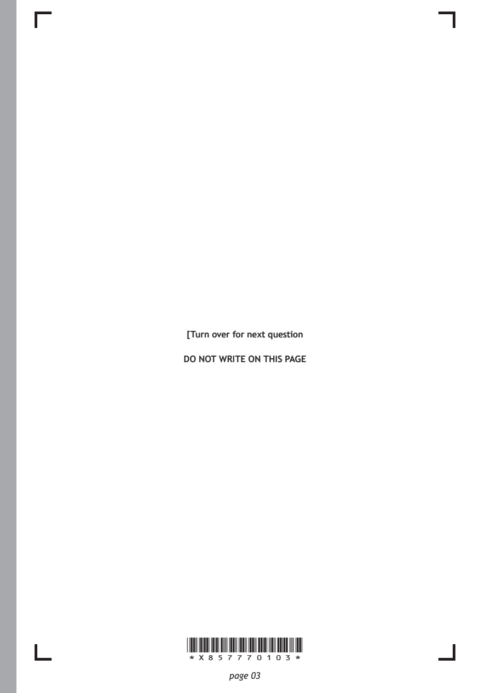
Selectable page text
[Turn over for next question
DO NOT WRITE ON THIS PAGE
*X857770103*
page 03PDF page 4
Question 1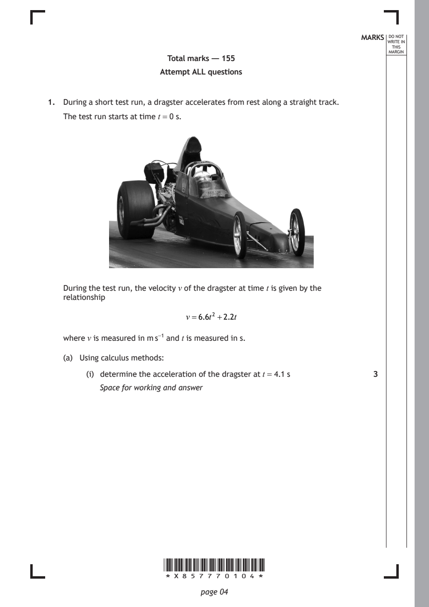
Selectable page text
MARKS _{W}^{D}_{R}^{O}_{I} _{T}^{N}OT
E IN
THIS
MARGIN
Total marks — 155
Attempt ALL questions
1. During a short test run, a dragster accelerates from rest along a straight track.
The test run starts at time t = 0 s.
During the test run, the velocity v of the dragster at time t is given by the
relationship
v=6.6t² +2.2t
where v is measured in m s⁻¹ and t is measured in s.
(a) Using calculus methods:
(i) determine the acceleration of the dragster at t = 4.1 s 3
Space for working and answer
*X857770104*
page 04PDF page 5
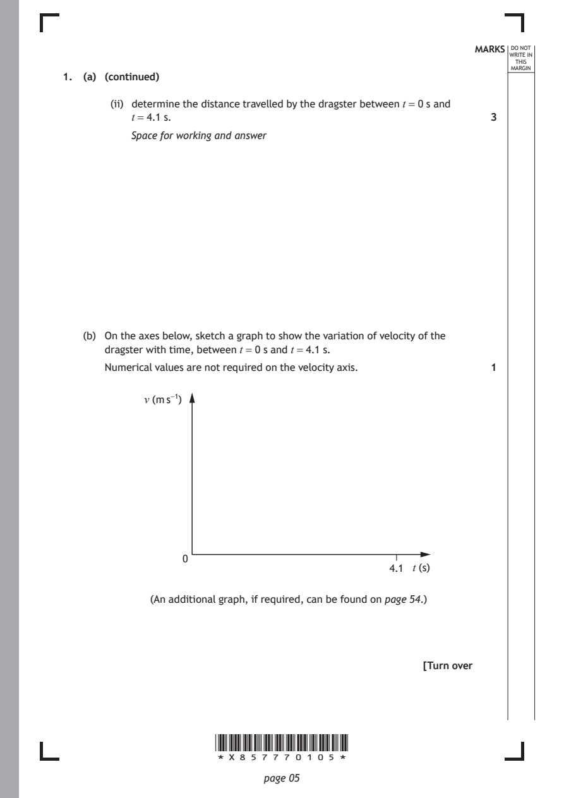
Selectable page text
MARKS _{W}^{D}_{R}^{O}_{I} _{T}^{N}OT
E IN
THIS
MARGIN
1. (a) (continued)
(ii) determine the distance travelled by the dragster between t = 0 s and
t = 4.1 s. 3
Space for working and answer
(b) On the axes below, sketch a graph to show the variation of velocity of the
dragster with time, between t = 0 s and t = 4.1 s.
Numerical values are not required on the velocity axis. 1
v (m s⁻¹)
0
4.1 t (s)
(An additional graph, if required, can be found on page 54.)
[Turn over
*X857770105*
page 05PDF page 6
Question 2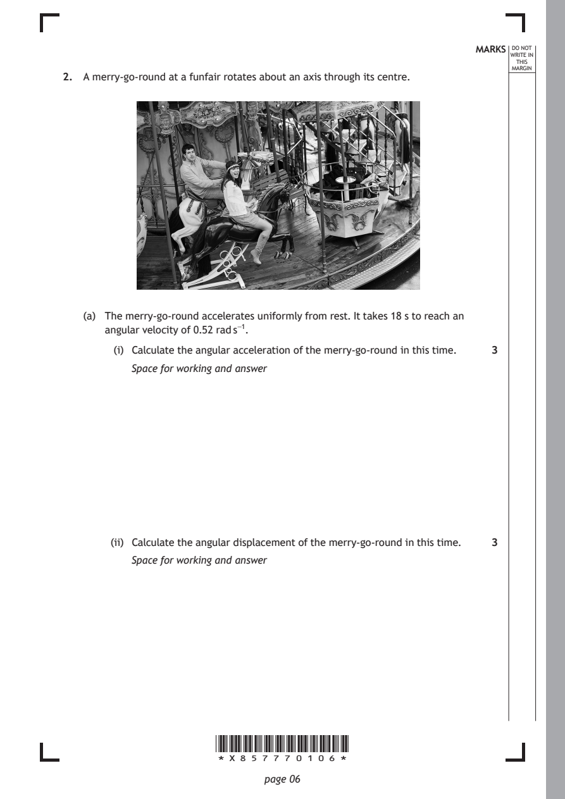
Selectable page text
MARKS _{W}^{D}_{R}^{O}_{I} _{T}^{N}OT
E IN
THIS
MARGIN
2. A merry-go-round at a funfair rotates about an axis through its centre.
(a) The merry-go-round accelerates uniformly from rest. It takes 18 s to reach an
angular velocity of 0.52 rad s⁻¹.
(i) Calculate the angular acceleration of the merry-go-round in this time. 3
Space for working and answer
(ii) Calculate the angular displacement of the merry-go-round in this time. 3
Space for working and answer
*X857770106*
page 06PDF page 7
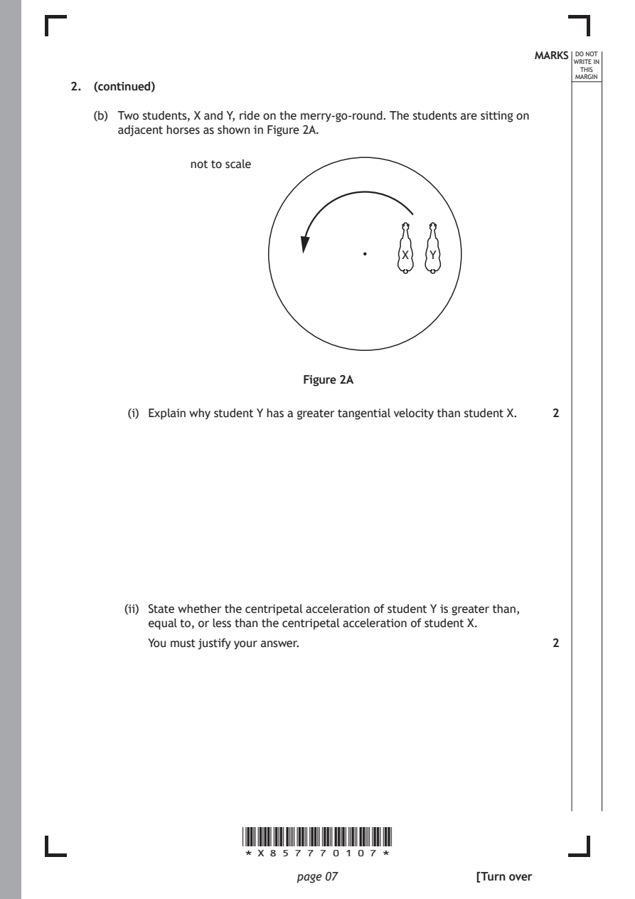
Selectable page text
MARKS _{W}^{D}_{R}^{O}_{I} _{T}^{N}OT
E IN
THIS
MARGIN
2. (continued)
(b) Two students, X and Y, ride on the merry-go-round. The students are sitting on
adjacent horses as shown in Figure 2A.
not to scale
X Y
Figure 2A
(i) Explain why student Y has a greater tangential velocity than student X. 2
(ii) State whether the centripetal acceleration of student Y is greater than,
equal to, or less than the centripetal acceleration of student X.
You must justify your answer. 2
*X857770107*
page 07 [Turn overPDF page 8
Question 3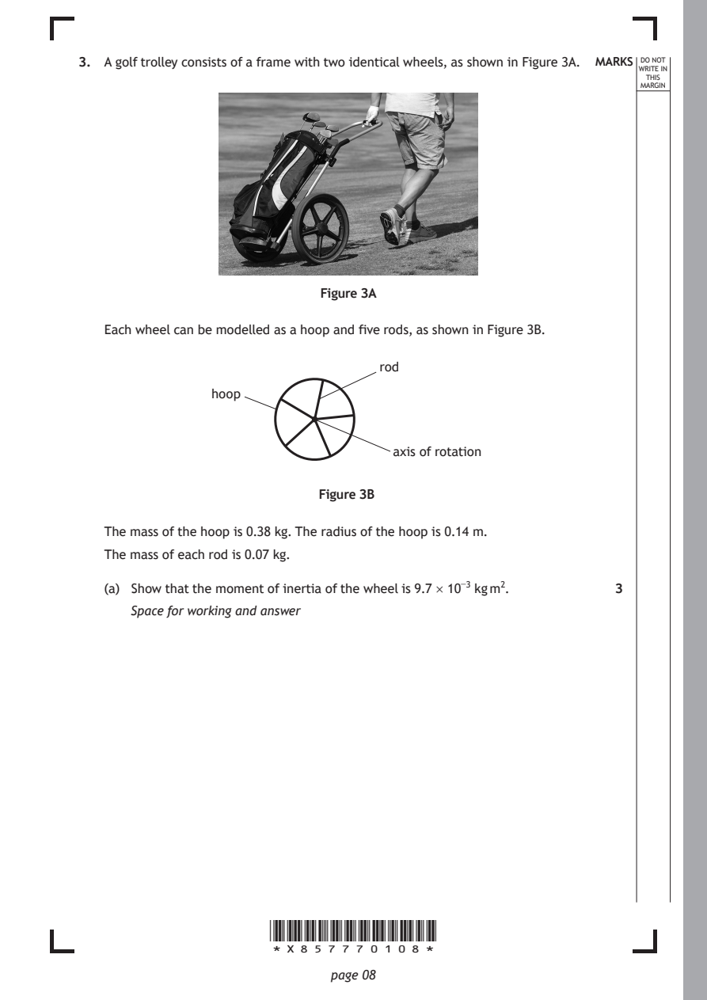
Selectable page text
3. A golf trolley consists of a frame with two identical wheels, as shown in Figure 3A. MARKS _{W}^{D}_{R}^{O}_{I} _{T}^{N}OT
E IN
THIS
MARGIN
Figure 3A
Each wheel can be modelled as a hoop and five rods, as shown in Figure 3B.
rod
hoop
axis of rotation
Figure 3B
The mass of the hoop is 0.38 kg. The radius of the hoop is 0.14 m.
The mass of each rod is 0.07 kg.
(a) Show that the moment of inertia of the wheel is 9.7 × 10⁻³ kg m². 3
Space for working and answer
*X857770108*
page 08PDF page 9
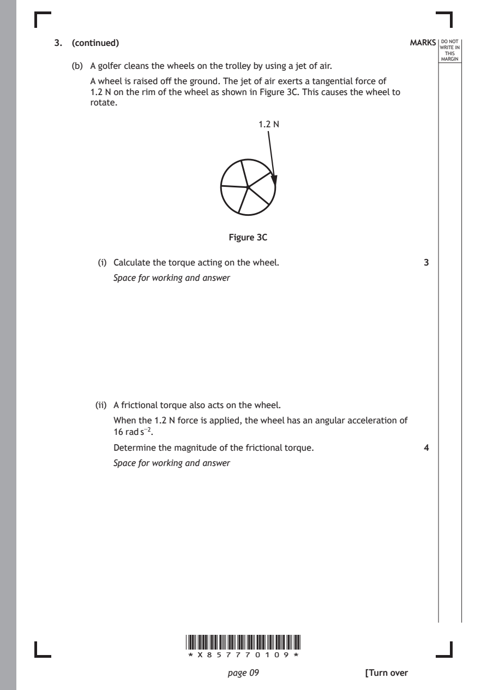
Selectable page text
3. (continued) MARKS _{W}^{D}_{R}^{O}_{I} _{T}^{N}OT
E IN
THIS
MARGIN
(b) A golfer cleans the wheels on the trolley by using a jet of air.
A wheel is raised off the ground. The jet of air exerts a tangential force of
1.2 N on the rim of the wheel as shown in Figure 3C. This causes the wheel to
rotate.
1.2 N
Figure 3C
(i) Calculate the torque acting on the wheel. 3
Space for working and answer
(ii) A frictional torque also acts on the wheel.
When the 1.2 N force is applied, the wheel has an angular acceleration of
16 rad s⁻².
Determine the magnitude of the frictional torque. 4
Space for working and answer
*X857770109*
page 09 [Turn overPDF page 10
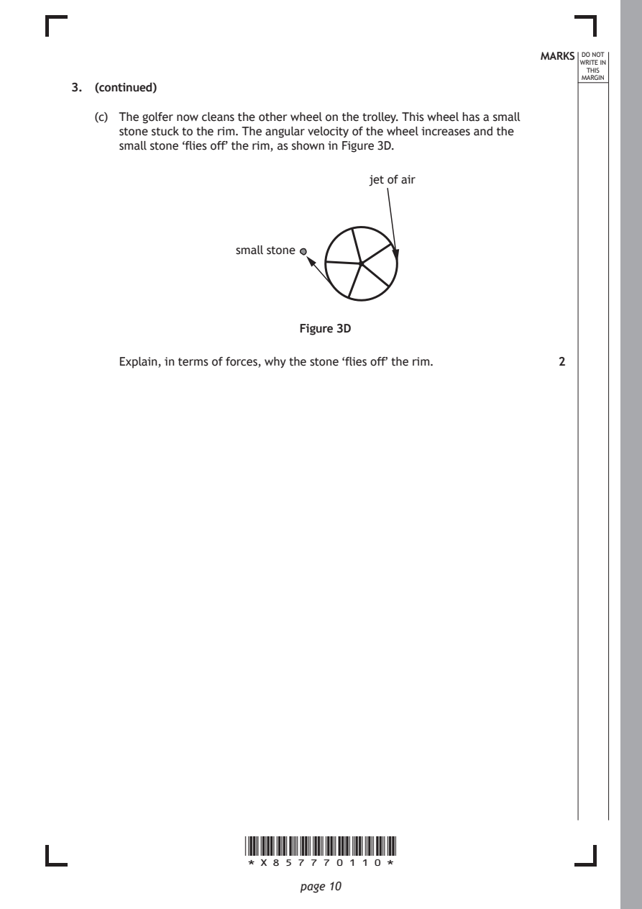
Selectable page text
MARKS _{W}^{D}_{R}^{O}_{I} _{T}^{N}OT
E IN
THIS
MARGIN
3. (continued)
(c) The golfer now cleans the other wheel on the trolley. This wheel has a small
stone stuck to the rim. The angular velocity of the wheel increases and the
small stone ‘flies off’ the rim, as shown in Figure 3D.
jet of air
small stone
Figure 3D
Explain, in terms of forces, why the stone ‘flies off’ the rim. 2
*X857770110*
page 10PDF page 11
Selectable page text
[Turn over for next question
DO NOT WRITE ON THIS PAGE
*X857770111*
page 11PDF page 12
Question 4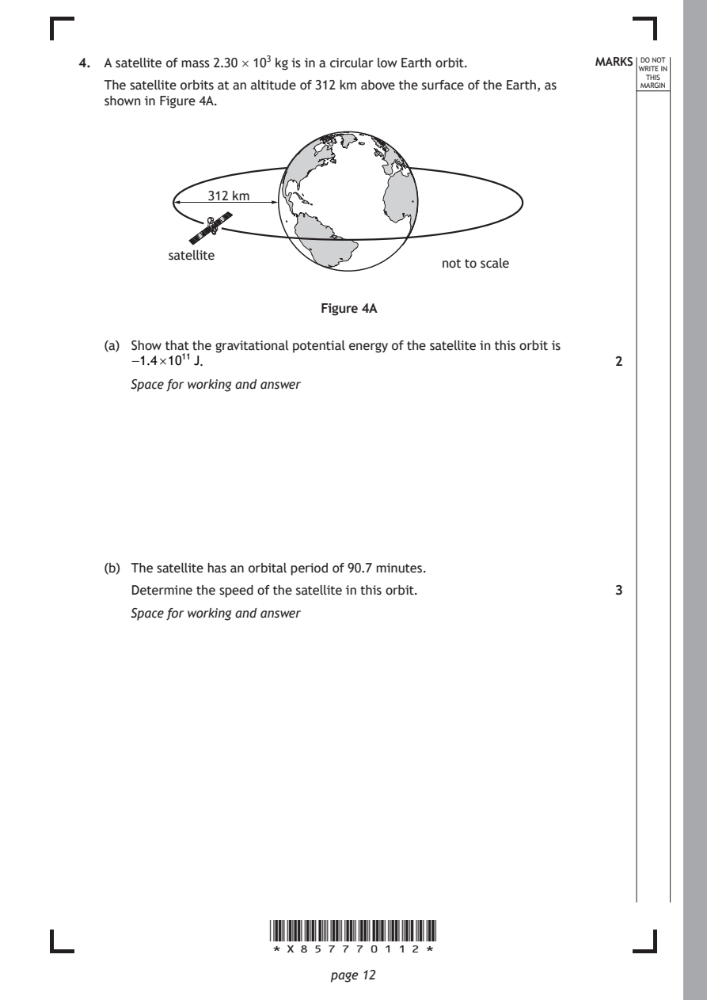
Selectable page text
4. A satellite of mass 2.30 × 10³ kg is in a circular low Earth orbit. MARKS _{W}^{D}_{R}^{O}_{I} _{T}^{N}OT
E IN
THIS
The satellite orbits at an altitude of 312 km above the surface of the Earth, as MARGIN
shown in Figure 4A.
312 km
satellite
not to scale
Figure 4A
(a) Show that the gravitational potential energy of the satellite in this orbit is
−1.4×10¹¹ J. 2
Space for working and answer
(b) The satellite has an orbital period of 90.7 minutes.
Determine the speed of the satellite in this orbit. 3
Space for working and answer
*X857770112*
page 12PDF page 13
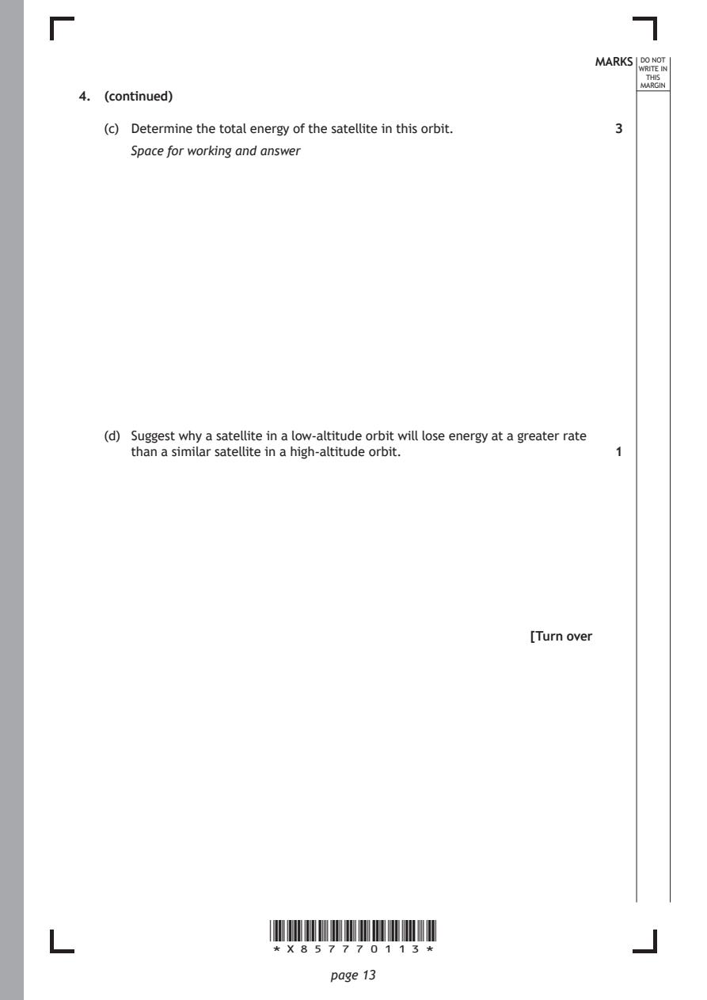
Selectable page text
MARKS _{W}^{D}_{R}^{O}_{I} _{T}^{N}OT
E IN
THIS
MARGIN
4. (continued)
(c) Determine the total energy of the satellite in this orbit. 3
Space for working and answer
(d) Suggest why a satellite in a low-altitude orbit will lose energy at a greater rate
than a similar satellite in a high-altitude orbit. 1
[Turn over
*X857770113*
page 13PDF page 14
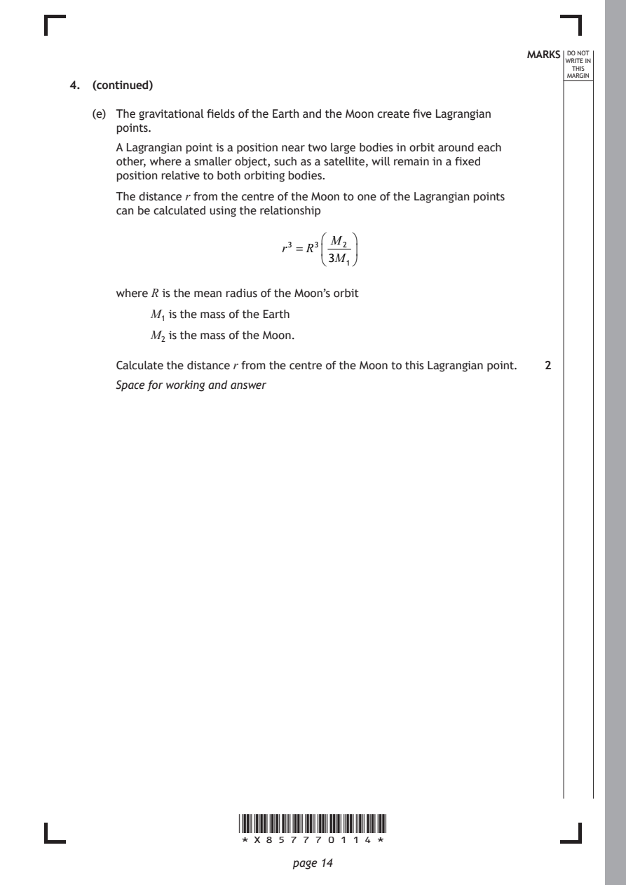
Selectable page text
MARKS _{W}^{D}_{R}^{O}_{I} _{T}^{N}OT
E IN
THIS
MARGIN
4. (continued)
(e) The gravitational fields of the Earth and the Moon create five Lagrangian
points.
A Lagrangian point is a position near two large bodies in orbit around each
other, where a smaller object, such as a satellite, will remain in a fixed
position relative to both orbiting bodies.
The distance r from the centre of the Moon to one of the Lagrangian points
can be calculated using the relationship
M₂
r³ = R³
3M₁
where R is the mean radius of the Moon’s orbit
M₁ is the mass of the Earth
M₂ is the mass of the Moon.
Calculate the distance r from the centre of the Moon to this Lagrangian point. 2
Space for working and answer
*X857770114*
page 14PDF page 15
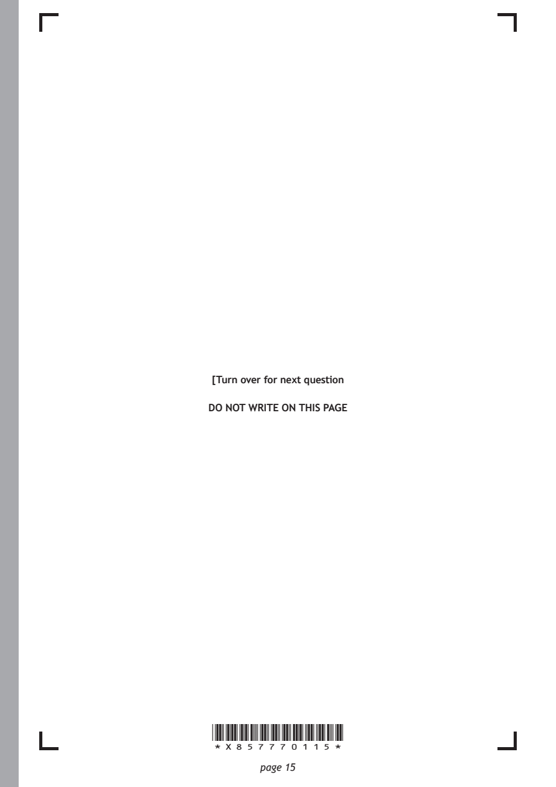
Selectable page text
[Turn over for next question
DO NOT WRITE ON THIS PAGE
*X857770115*
page 15PDF page 16
Question 5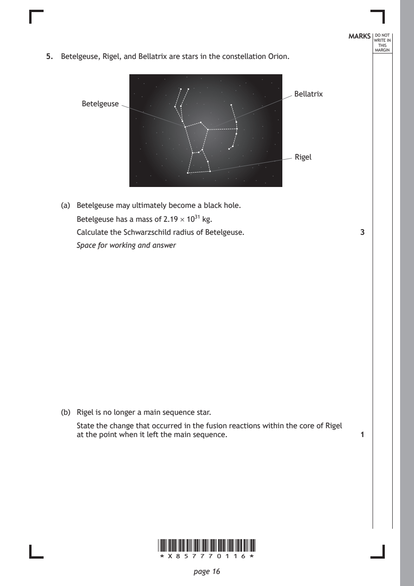
Selectable page text
MARKS _{W}^{D}_{R}^{O}_{I} _{T}^{N}OT
E IN
THIS
MARGIN
5. Betelgeuse, Rigel, and Bellatrix are stars in the constellation Orion.
Bellatrix
Betelgeuse
Rigel
(a) Betelgeuse may ultimately become a black hole.
Betelgeuse has a mass of 2.19 × 10³¹ kg.
Calculate the Schwarzschild radius of Betelgeuse. 3
Space for working and answer
(b) Rigel is no longer a main sequence star.
State the change that occurred in the fusion reactions within the core of Rigel
at the point when it left the main sequence. 1
*X857770116*
page 16PDF page 17
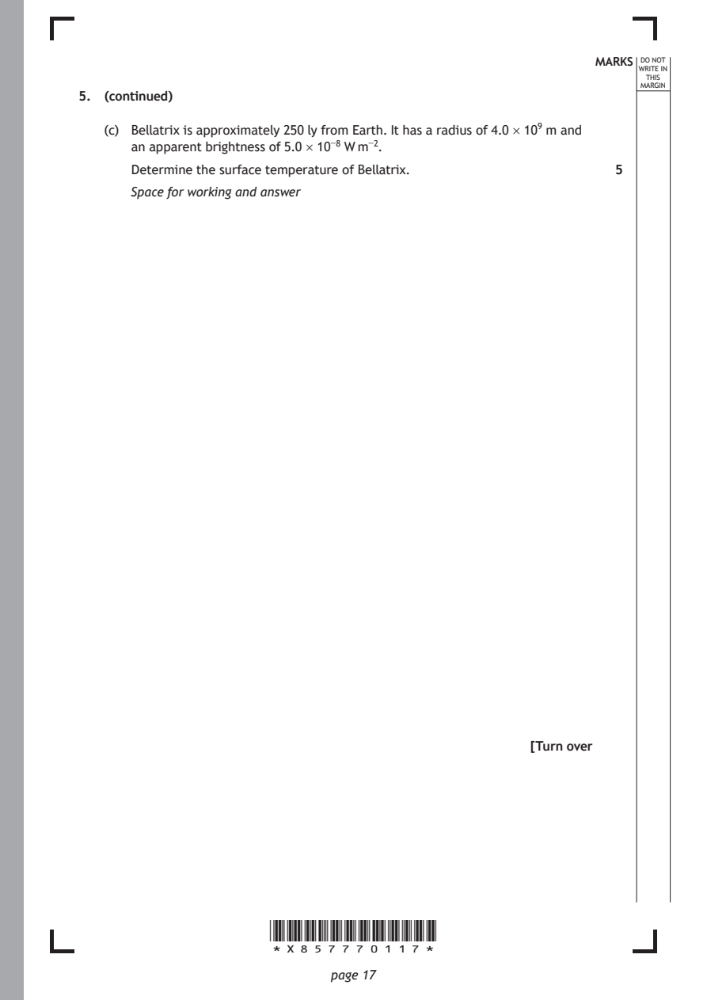
Selectable page text
MARKS _{W}^{D}_{R}^{O}_{I} _{T}^{N}OT
E IN
THIS
MARGIN
5. (continued)
(c) Bellatrix is approximately 250 ly from Earth. It has a radius of 4.0 × 10⁹ m and
an apparent brightness of 5.0 × 10⁻⁸ W m⁻².
Determine the surface temperature of Bellatrix. 5
Space for working and answer
[Turn over
*X857770117*
page 17PDF page 18
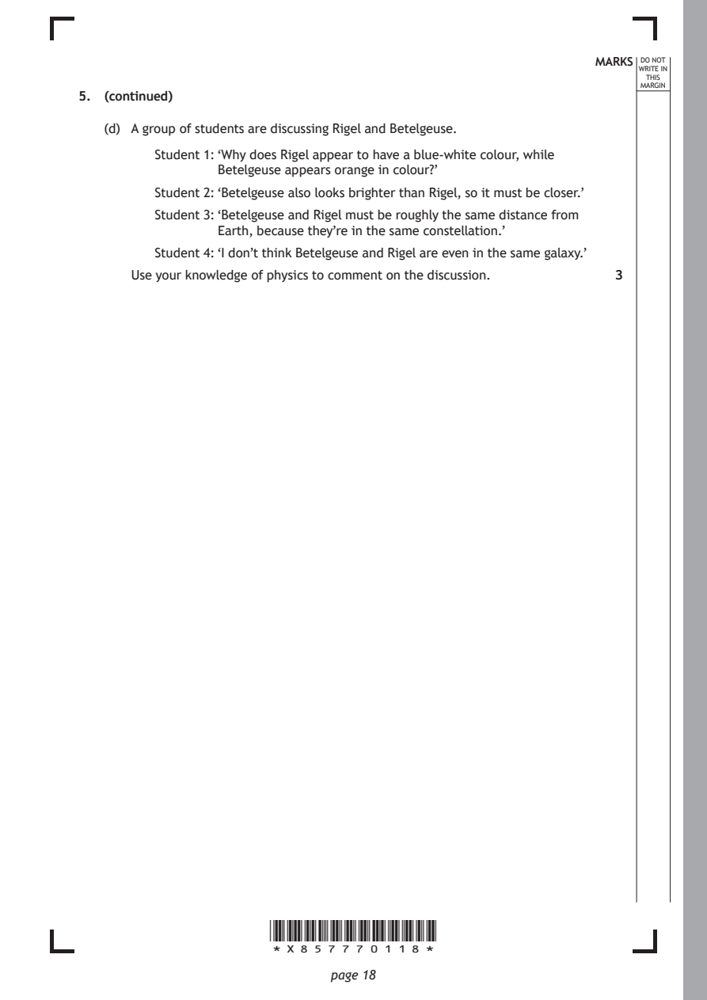
Selectable page text
MARKS _{W}^{D}_{R}^{O}_{I} _{T}^{N}OT
E IN
THIS
MARGIN
5. (continued)
(d) A group of students are discussing Rigel and Betelgeuse.
Student 1: ‘ Why does Rigel appear to have a blue-white colour, while
Betelgeuse appears orange in colour?’
Student 2: ‘Betelgeuse also looks brighter than Rigel, so it must be closer.’
Student 3: ‘ Betelgeuse and Rigel must be roughly the same distance from
Earth, because they’re in the same constellation.’
Student 4: ‘I don’t think Betelgeuse and Rigel are even in the same galaxy.’
Use your knowledge of physics to comment on the discussion. 3
*X857770118*
page 18PDF page 19
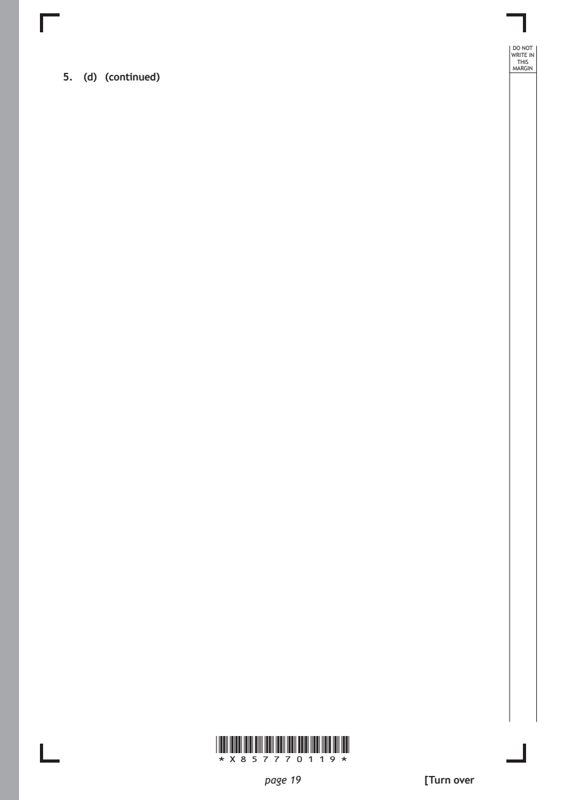
Selectable page text
DO NOT
WRITE IN
THIS
MARGIN
5. (d) (continued)
*X857770119*
page 19 [Turn overPDF page 20
Question 6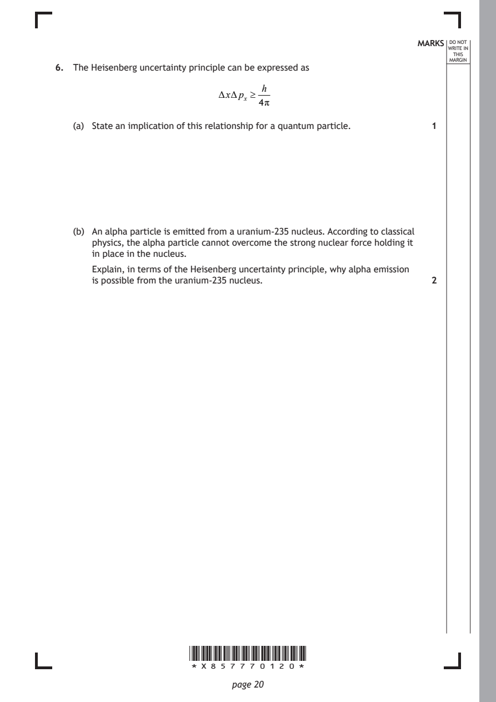
Selectable page text
MARKS _{W}^{D}_{R}^{O}_{I} _{T}^{N}OT
E IN
THIS
MARGIN
6. The Heisenberg uncertainty principle can be expressed as
h
ΔxΔpₓ ≥
4π
(a) State an implication of this relationship for a quantum particle. 1
(b) An alpha particle is emitted from a uranium-235 nucleus. According to classical
physics, the alpha particle cannot overcome the strong nuclear force holding it
in place in the nucleus.
Explain, in terms of the Heisenberg uncertainty principle, why alpha emission
is possible from the uranium-235 nucleus. 2
*X857770120*
page 20PDF page 21
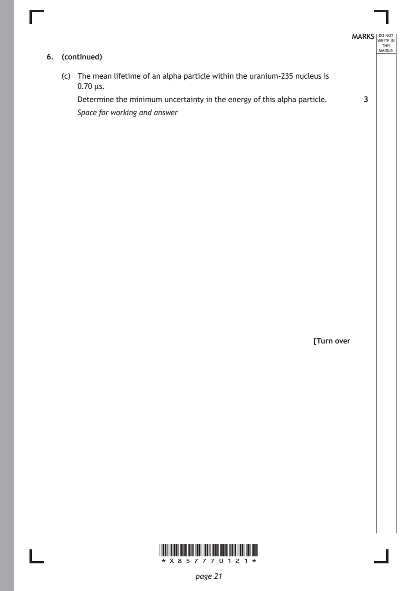
Selectable page text
MARKS _{W}^{D}_{R}^{O}_{I} _{T}^{N}OT
E IN
THIS
MARGIN
6. (continued)
(c) The mean lifetime of an alpha particle within the uranium-235 nucleus is
0.70 µs.
Determine the minimum uncertainty in the energy of this alpha particle. 3
Space for working and answer
[Turn over
*X857770121*
page 21PDF page 22
Question 7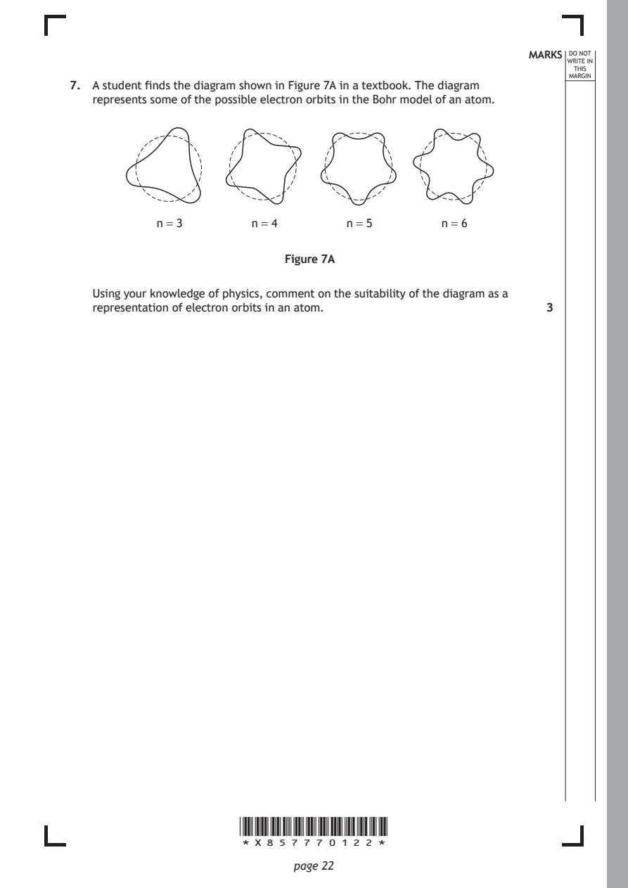
Selectable page text
MARKS _{W}^{D}_{R}^{O}_{I} _{T}^{N}OT
E IN
THIS
MARGIN
7. A student finds the diagram shown in Figure 7A in a textbook. The diagram
represents some of the possible electron orbits in the Bohr model of an atom.
n = 3 n = 4 n = 5 n = 6
Figure 7A
Using your knowledge of physics, comment on the suitability of the diagram as a
representation of electron orbits in an atom. 3
*X857770122*
page 22PDF page 23
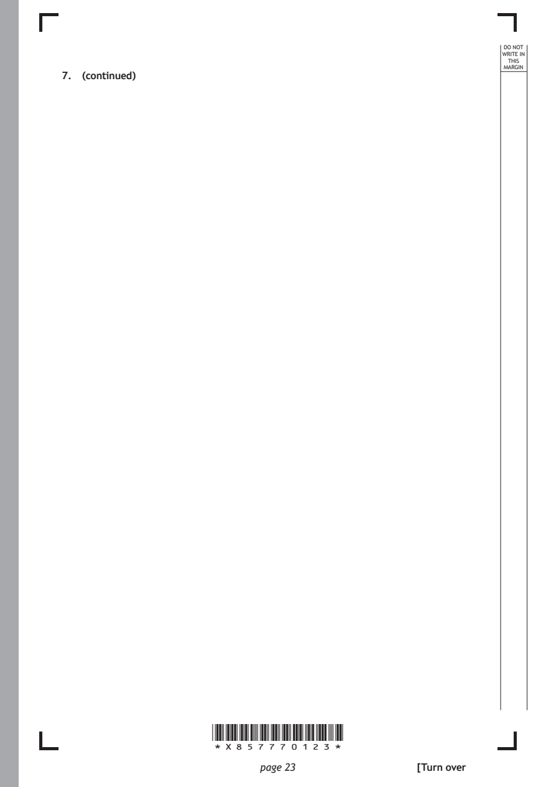
Selectable page text
DO NOT
WRITE IN
THIS
MARGIN
7. (continued)
*X857770123*
page 23 [Turn overPDF page 24
Question 8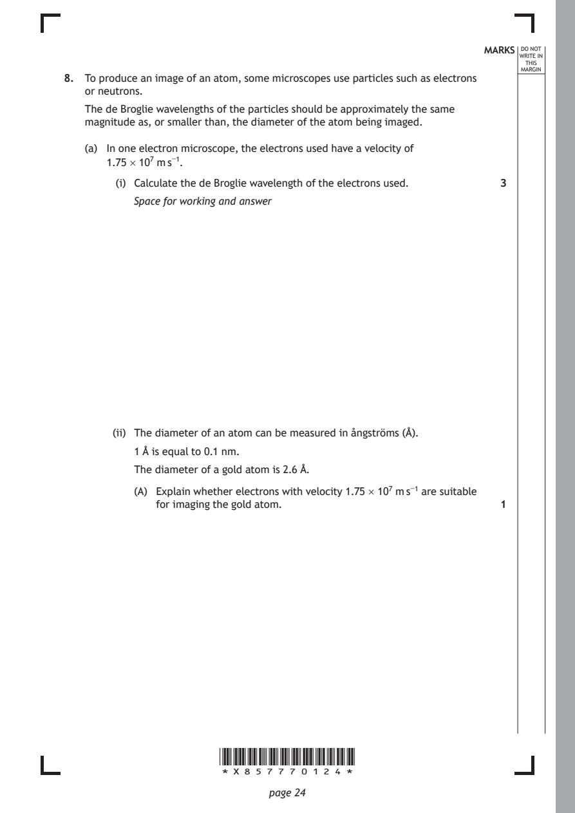
Selectable page text
MARKS _{W}^{D}_{R}^{O}_{I} _{T}^{N}OT
E IN
THIS
MARGIN
8. To produce an image of an atom, some microscopes use particles such as electrons
or neutrons.
The de Broglie wavelengths of the particles should be approximately the same
magnitude as, or smaller than, the diameter of the atom being imaged.
(a) In one electron microscope, the electrons used have a velocity of
1.75 × 10⁷ m s⁻¹.
(i) Calculate the de Broglie wavelength of the electrons used. 3
Space for working and answer
(ii) The diameter of an atom can be measured in ångströms (Å).
1 Å is equal to 0.1 nm.
The diameter of a gold atom is 2.6 Å.
(A) Explain whether electrons with velocity 1.75 × 10⁷ m s⁻¹ are suitable
for imaging the gold atom. 1
*X857770124*
page 24PDF page 25
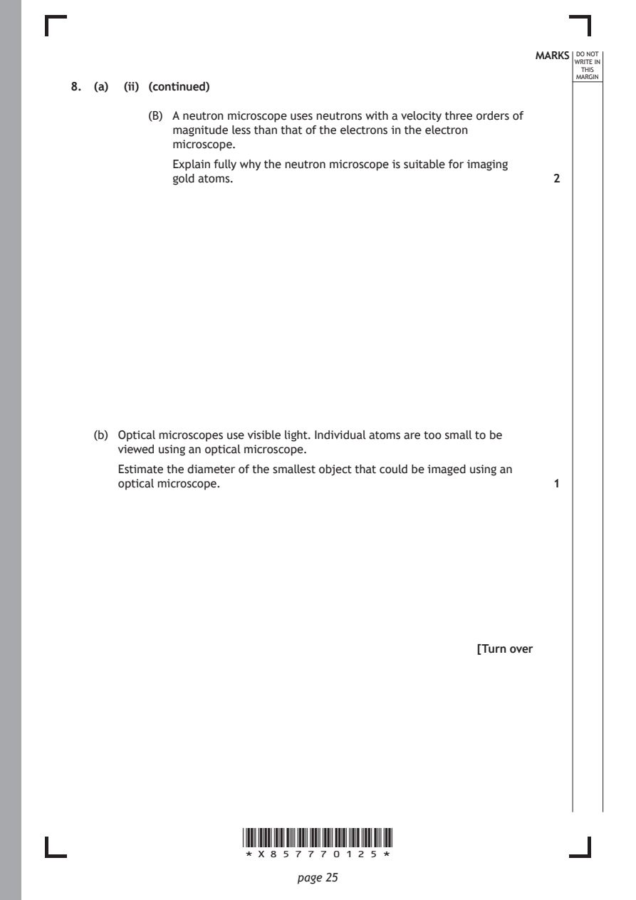
Selectable page text
MARKS _{W}^{D}_{R}^{O}_{I} _{T}^{N}OT
E IN
THIS
MARGIN
8. (a) (ii) (continued)
(B) A neutron microscope uses neutrons with a velocity three orders of
magnitude less than that of the electrons in the electron
microscope.
Explain fully why the neutron microscope is suitable for imaging
gold atoms. 2
(b) Optical microscopes use visible light. Individual atoms are too small to be
viewed using an optical microscope.
Estimate the diameter of the smallest object that could be imaged using an
optical microscope. 1
[Turn over
*X857770125*
page 25PDF page 26
Question 9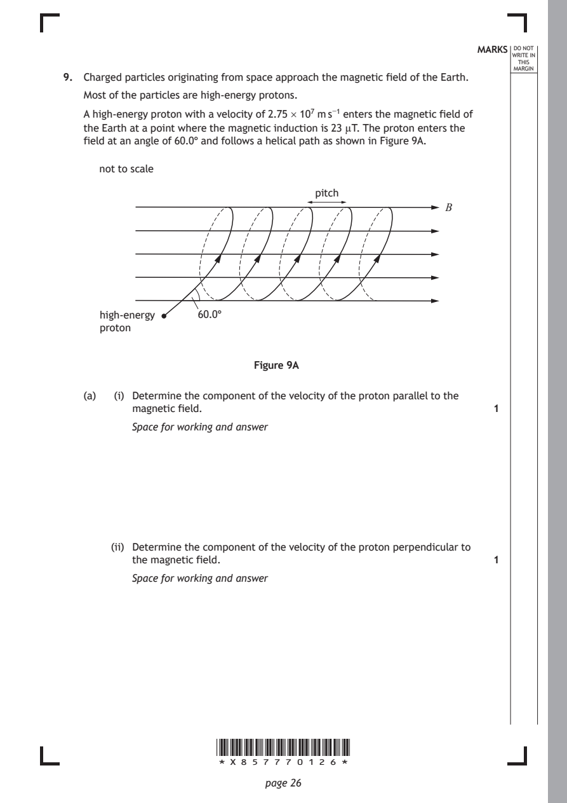
Selectable page text
MARKS _{W}^{D}_{R}^{O}_{I} _{T}^{N}OT
E IN
THIS
MARGIN
9. Charged particles originating from space approach the magnetic field of the Earth.
Most of the particles are high-energy protons.
A high-energy proton with a velocity of 2.75 × 10⁷ m s⁻¹ enters the magnetic field of
the Earth at a point where the magnetic induction is 23 µT. The proton enters the
field at an angle of 60.0° and follows a helical path as shown in Figure 9A.
not to scale
pitch
B
high-energy 60.0°
proton
Figure 9A
(a) (i) Determine the component of the velocity of the proton parallel to the
magnetic field. 1
Space for working and answer
(ii) Determine the component of the velocity of the proton perpendicular to
the magnetic field. 1
Space for working and answer
*X857770126*
page 26PDF page 27
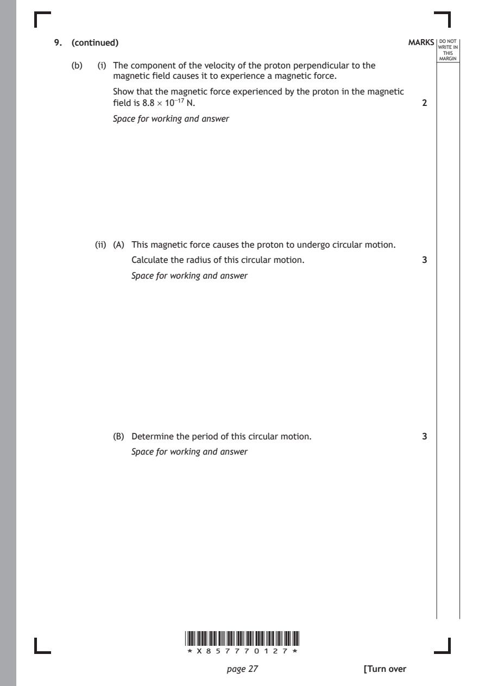
Selectable page text
9. (continued) MARKS _{W}^{D}_{R}^{O}_{I} _{T}^{N}OT
E IN
THIS
MARGIN
(b) (i) The component of the velocity of the proton perpendicular to the
magnetic field causes it to experience a magnetic force.
Show that the magnetic force experienced by the proton in the magnetic
field is 8.8 × 10⁻¹⁷ N. 2
Space for working and answer
(ii) (A) This magnetic force causes the proton to undergo circular motion.
Calculate the radius of this circular motion. 3
Space for working and answer
(B) Determine the period of this circular motion. 3
Space for working and answer
*X857770127*
page 27 [Turn overPDF page 28
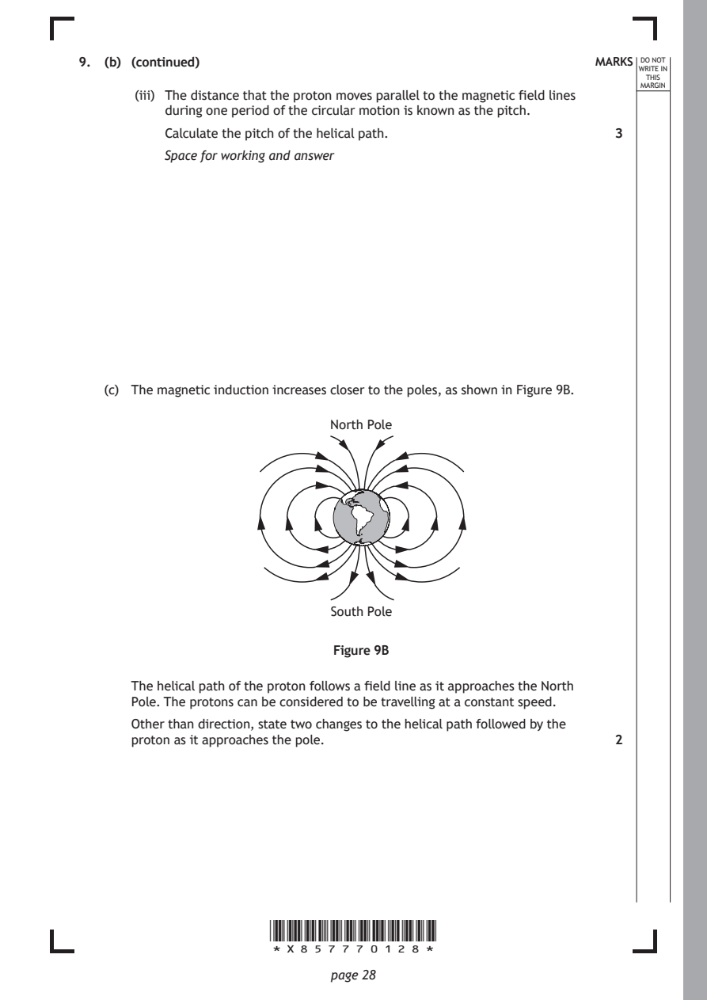
Selectable page text
9. (b) (continued) MARKS _{W}^{D}_{R}^{O}_{I} _{T}^{N}OT
E IN
THIS
MARGIN
(iii) The distance that the proton moves parallel to the magnetic field lines
during one period of the circular motion is known as the pitch.
Calculate the pitch of the helical path. 3
Space for working and answer
(c) The magnetic induction increases closer to the poles, as shown in Figure 9B.
North Pole
South Pole
Figure 9B
The helical path of the proton follows a field line as it approaches the North
Pole. The protons can be considered to be travelling at a constant speed.
Other than direction, state two changes to the helical path followed by the
proton as it approaches the pole. 2
*X857770128*
page 28PDF page 29
Selectable page text
[Turn over for next question
DO NOT WRITE ON THIS PAGE
*X857770129*
page 29PDF page 30
Question 10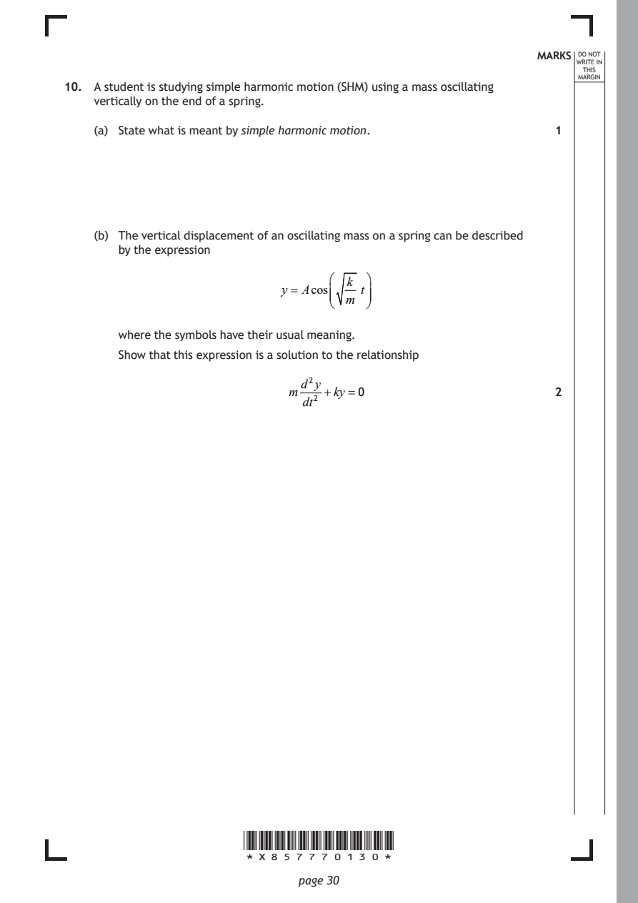
Selectable page text
MARKS _{W}^{D}_{R}^{O}_{I} _{T}^{N}OT
E IN
THIS
MARGIN
10. A student is studying simple harmonic motion (SHM) using a mass oscillating
vertically on the end of a spring.
(a) State what is meant by simple harmonic motion. 1
(b) The vertical displacement of an oscillating mass on a spring can be described
by the expression
k
y = Acos t
m
where the symbols have their usual meaning.
Show that this expression is a solution to the relationship
d²y
m +ky =0 2
dt²
*X857770130*
page 30PDF page 31
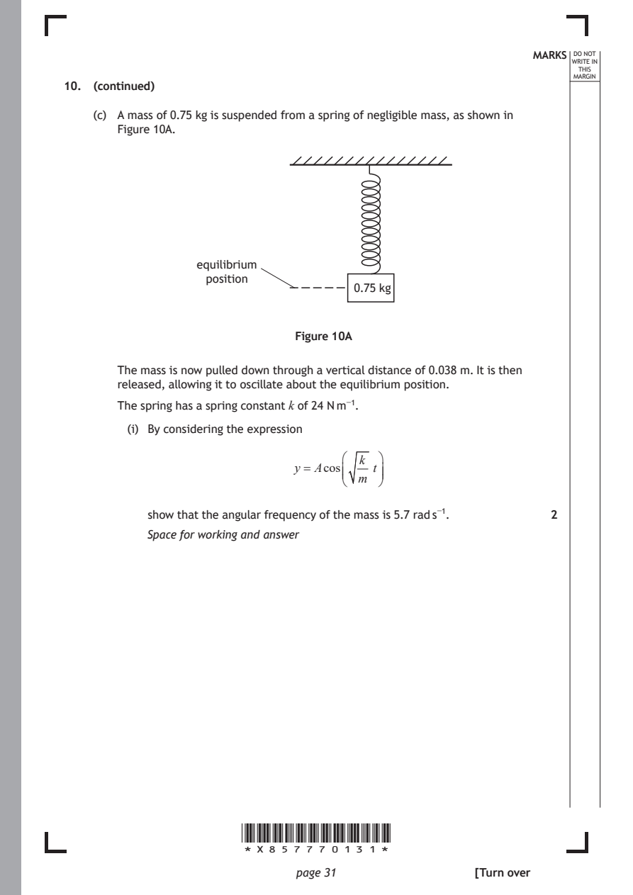
Selectable page text
MARKS _{W}^{D}_{R}^{O}_{I} _{T}^{N}OT
E IN
THIS
MARGIN
10. (continued)
(c) A mass of 0.75 kg is suspended from a spring of negligible mass, as shown in
Figure 10A.
equilibrium
position
0.75 kg
Figure 10A
The mass is now pulled down through a vertical distance of 0.038 m. It is then
released, allowing it to oscillate about the equilibrium position.
The spring has a spring constant k of 24 N m⁻¹.
(i) By considering the expression
k
y = Acos t
m
show that the angular frequency of the mass is 5.7 rad s⁻¹. 2
Space for working and answer
*X857770131*
page 31 [Turn overPDF page 32
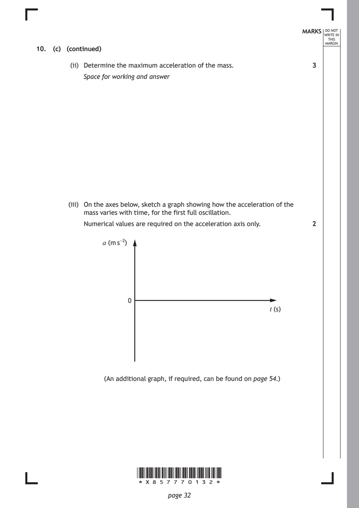
Selectable page text
MARKS _{W}^{D}_{R}^{O}_{I} _{T}^{N}OT
E IN
THIS
MARGIN
10. (c) (continued)
(ii) Determine the maximum acceleration of the mass. 3
Space for working and answer
(iii) On the axes below, sketch a graph showing how the acceleration of the
mass varies with time, for the first full oscillation.
Numerical values are required on the acceleration axis only. 2
a (m s⁻²)
0
t (s)
(An additional graph, if required, can be found on page 54.)
*X857770132*
page 32PDF page 33
Selectable page text
[Turn over for next question
DO NOT WRITE ON THIS PAGE
*X857770133*
page 33PDF page 34
Question 11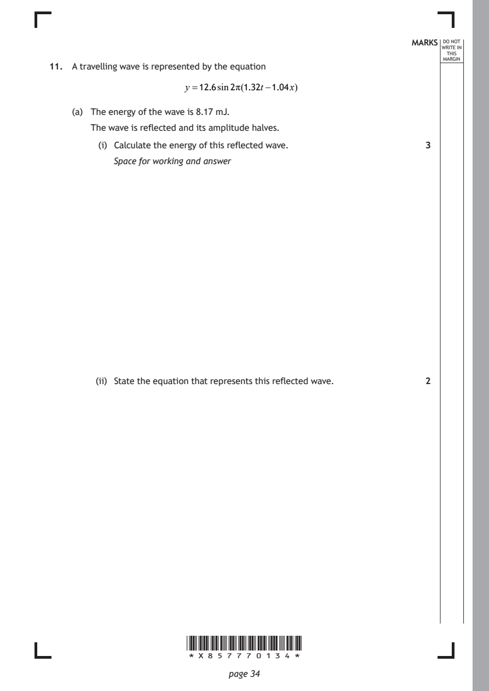
Selectable page text
MARKS _{W}^{D}_{R}^{O}_{I} _{T}^{N}OT
E IN
THIS
MARGIN
11. A travelling wave is represented by the equation
y =12.6sin2π(1.32t−1.04x)
(a) The energy of the wave is 8.17 mJ.
The wave is reflected and its amplitude halves.
(i) Calculate the energy of this reflected wave. 3
Space for working and answer
(ii) State the equation that represents this reflected wave. 2
*X857770134*
page 34PDF page 35
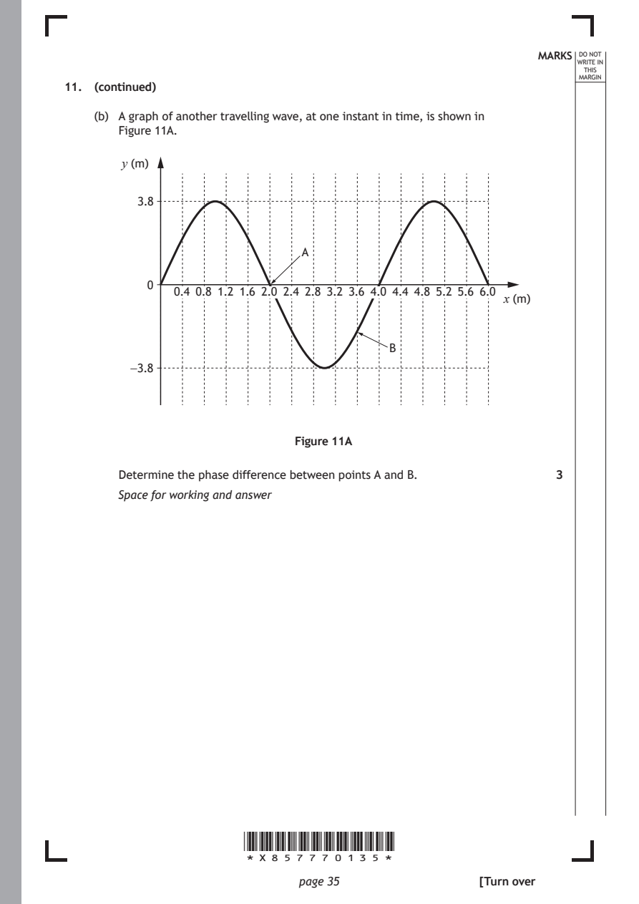
Selectable page text
MARKS _{W}^{D}_{R}^{O}_{I} _{T}^{N}OT
E IN
THIS
MARGIN
11. (continued)
(b) A graph of another travelling wave, at one instant in time, is shown in
Figure 11A.
y (m)
3.8
A
0
0.4 0.8 1.2 1.6 2.0 2.4 2.8 3.2 3.6 4.0 4.4 4.8 5.2 5.6 6.0
x (m)
B
−3.8
Figure 11A
Determine the phase difference between points A and B. 3
Space for working and answer
*X857770135*
page 35 [Turn overPDF page 36
Question 12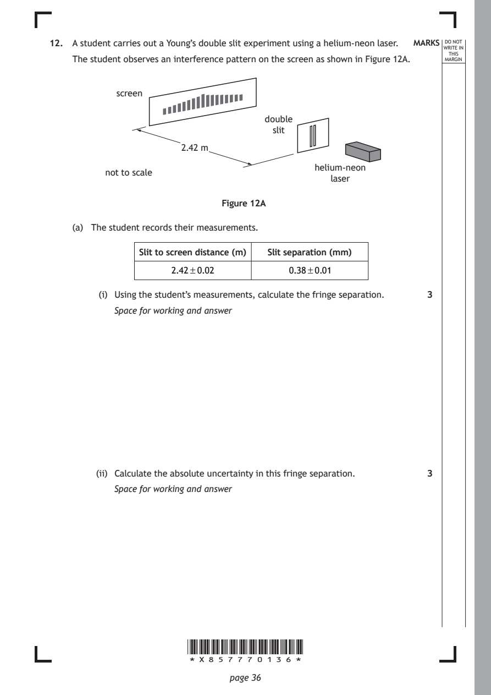
Selectable page text
12. A student carries out a Young’s double slit experiment using a helium-neon laser. MARKS _{W}^{D}_{R}^{O}_{I} _{T}^{N}OT
E IN
THIS
The student observes an interference pattern on the screen as shown in Figure 12A. MARGIN
screen
double
slit
2.42 m
helium-neon
not to scale
laser
Figure 12A
(a) The student records their measurements.
Slit to screen distance (m) Slit separation (mm)
2.42±0.02 0.38±0.01
(i) Using the student’s measurements, calculate the fringe separation. 3
Space for working and answer
(ii) Calculate the absolute uncertainty in this fringe separation. 3
Space for working and answer
*X857770136*
page 36PDF page 37
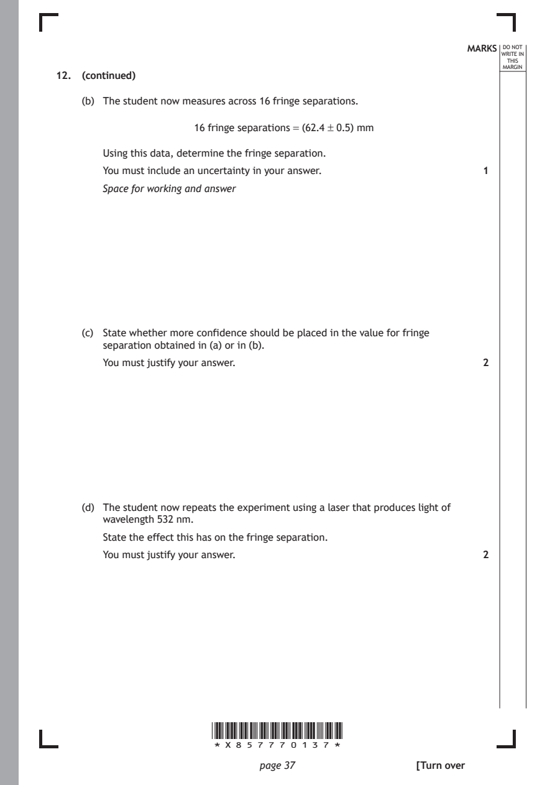
Selectable page text
MARKS _{W}^{D}_{R}^{O}_{I} _{T}^{N}OT
E IN
THIS
MARGIN
12. (continued)
(b) The student now measures across 16 fringe separations.
16 fringe separations = (62.4 ± 0.5) mm
Using this data, determine the fringe separation.
You must include an uncertainty in your answer. 1
Space for working and answer
(c) State whether more confidence should be placed in the value for fringe
separation obtained in (a) or in (b).
You must justify your answer. 2
(d) The student now repeats the experiment using a laser that produces light of
wavelength 532 nm.
State the effect this has on the fringe separation.
You must justify your answer. 2
*X857770137*
page 37 [Turn overPDF page 38
Question 13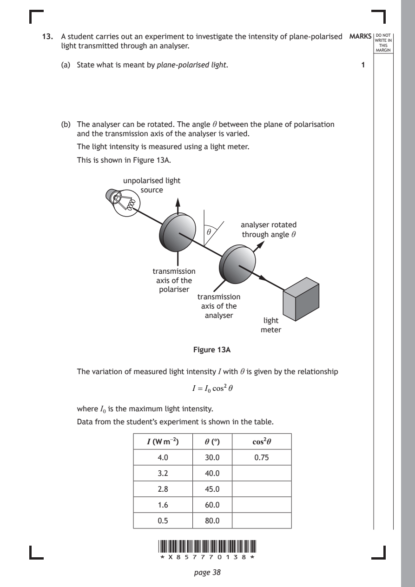
Selectable page text
13. A student carries out an experiment to investigate the intensity of plane-polarised MARKS _{W}^{D}_{R}^{O}_{I} _{T}^{N}OT
E IN
light transmitted through an analyser. THIS
MARGIN
(a) State what is meant by plane‑polarised light. 1
(b) The analyser can be rotated. The angle θ between the plane of polarisation
and the transmission axis of the analyser is varied.
The light intensity is measured using a light meter.
This is shown in Figure 13A.
unpolarised light
source
analyser rotated
θ
through angle θ
transmission
axis of the
polariser
transmission
axis of the
analyser
light
meter
Figure 13A
The variation of measured light intensity I with θ is given by the relationship
I = I₀cos²θ
where I₀ is the maximum light intensity.
Data from the student’s experiment is shown in the table.
I (W m⁻²) θ (°) cos²θ
4.0 30.0 0.75
3.2 40.0
2.8 45.0
1.6 60.0
0.5 80.0
*X857770138*
page 38PDF page 39
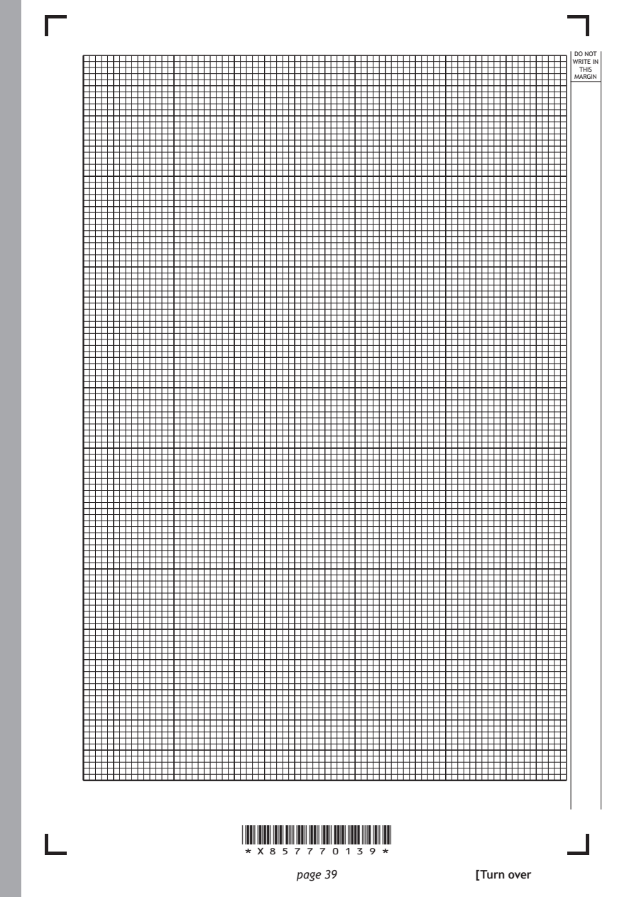
Selectable page text
DO NOT
WRITE IN
THIS
MARGIN
*X857770139*
page 39 [Turn overPDF page 40
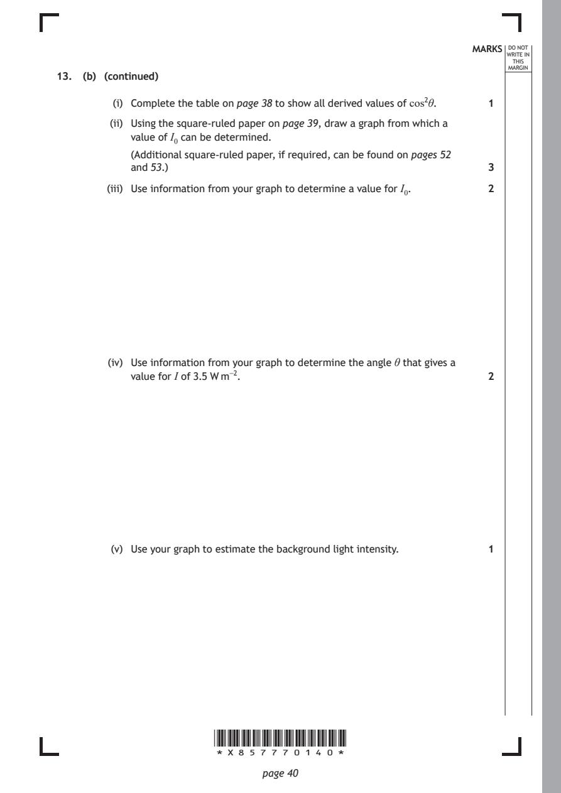
Selectable page text
MARKS _{W}^{D}_{R}^{O}_{I} _{T}^{N}OT
E IN
THIS
MARGIN
13. (b) (continued)
(i) Complete the table on page 38 to show all derived values of cos²θ. 1
(ii) Using the square-ruled paper on page 39, draw a graph from which a
value of I₀ can be determined.
(Additional square-ruled paper, if required, can be found on pages 52
and 53.) 3
(iii) Use information from your graph to determine a value for I₀. 2
(iv) Use information from your graph to determine the angle θ that gives a
value for I of 3.5 W m⁻². 2
(v) Use your graph to estimate the background light intensity. 1
*X857770140*
page 40PDF page 41
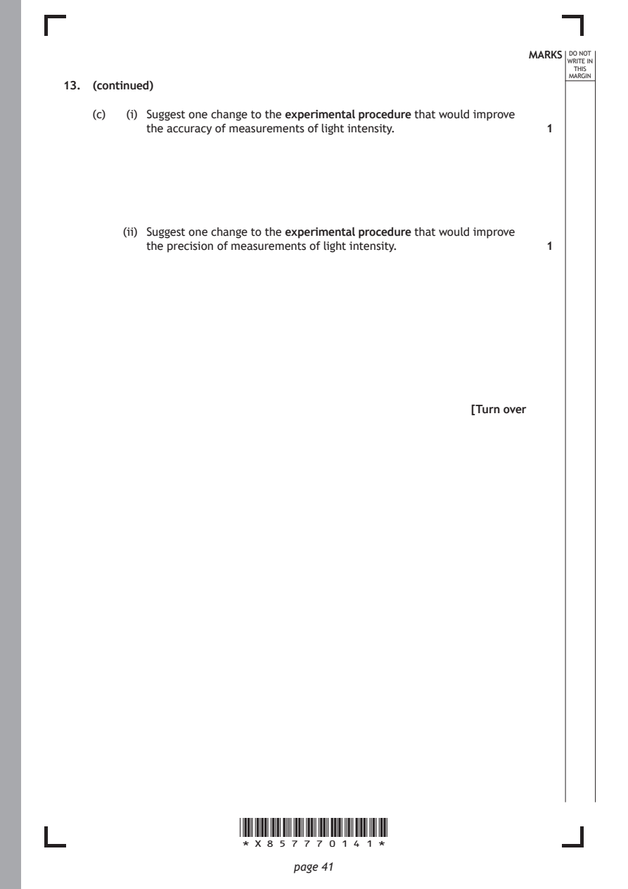
Selectable page text
MARKS _{W}^{D}_{R}^{O}_{I} _{T}^{N}OT
E IN
THIS
MARGIN
13. (continued)
(c) (i) Suggest one change to the experimental procedure that would improve
the accuracy of measurements of light intensity. 1
(ii) Suggest one change to the experimental procedure that would improve
the precision of measurements of light intensity. 1
[Turn over
*X857770141*
page 41PDF page 42
Question 14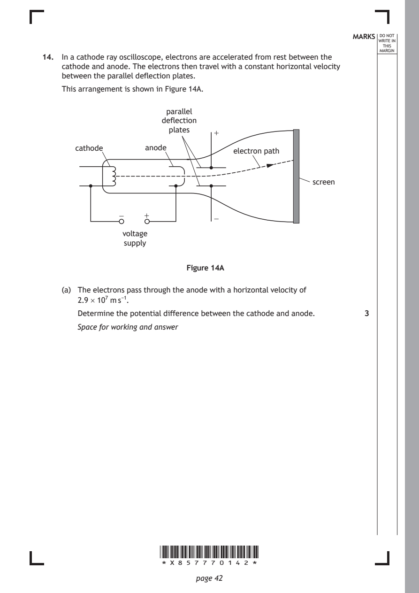
Selectable page text
MARKS _{W}^{D}_{R}^{O}_{I} _{T}^{N}OT
E IN
THIS
MARGIN
14. In a cathode ray oscilloscope, electrons are accelerated from rest between the
cathode and anode. The electrons then travel with a constant horizontal velocity
between the parallel deflection plates.
This arrangement is shown in Figure 14A.
parallel
deflection
plates
+
cathode anode
electron path
screen
− +
−
voltage
supply
Figure 14A
(a) The electrons pass through the anode with a horizontal velocity of
2.9 × 10⁷ m s⁻¹.
Determine the potential difference between the cathode and anode. 3
Space for working and answer
*X857770142*
page 42PDF page 43
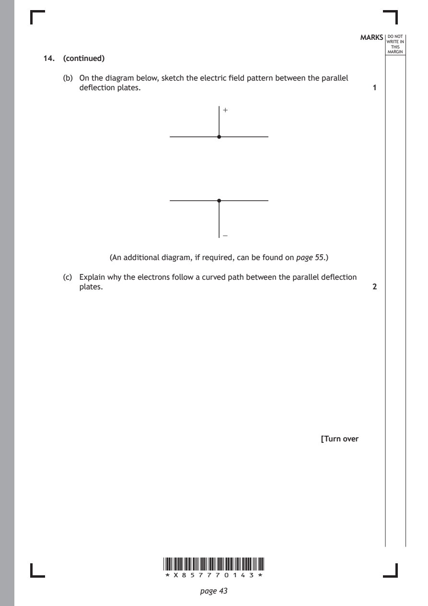
Selectable page text
MARKS _{W}^{D}_{R}^{O}_{I} _{T}^{N}OT
E IN
THIS
MARGIN
14. (continued)
(b) On the diagram below, sketch the electric field pattern between the parallel
deflection plates. 1
+
−
(An additional diagram, if required, can be found on page 55.)
(c) Explain why the electrons follow a curved path between the parallel deflection
plates. 2
[Turn over
*X857770143*
page 43PDF page 44
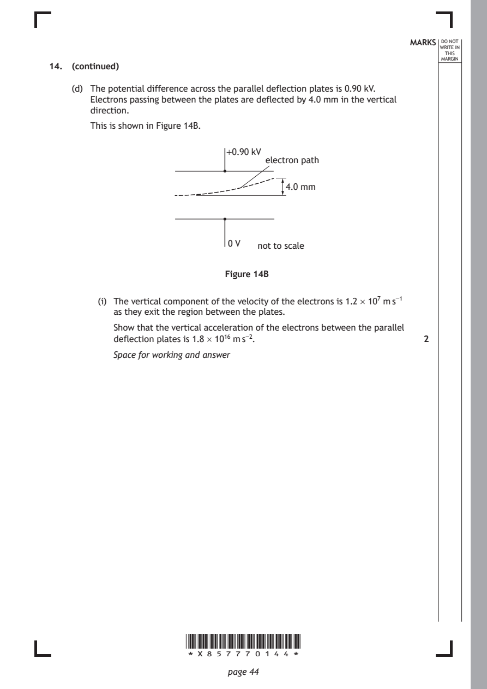
Selectable page text
MARKS _{W}^{D}_{R}^{O}_{I} _{T}^{N}OT
E IN
THIS
MARGIN
14. (continued)
(d) The potential difference across the parallel deflection plates is 0.90 kV.
Electrons passing between the plates are deflected by 4.0 mm in the vertical
direction.
This is shown in Figure 14B.
+0.90 kV
electron path
4.0 mm
0 V not to scale
Figure 14B
(i) The vertical component of the velocity of the electrons is 1.2 × 10⁷ m s⁻¹
as they exit the region between the plates.
Show that the vertical acceleration of the electrons between the parallel
deflection plates is 1.8 × 10¹⁶ m s⁻². 2
Space for working and answer
*X857770144*
page 44PDF page 45
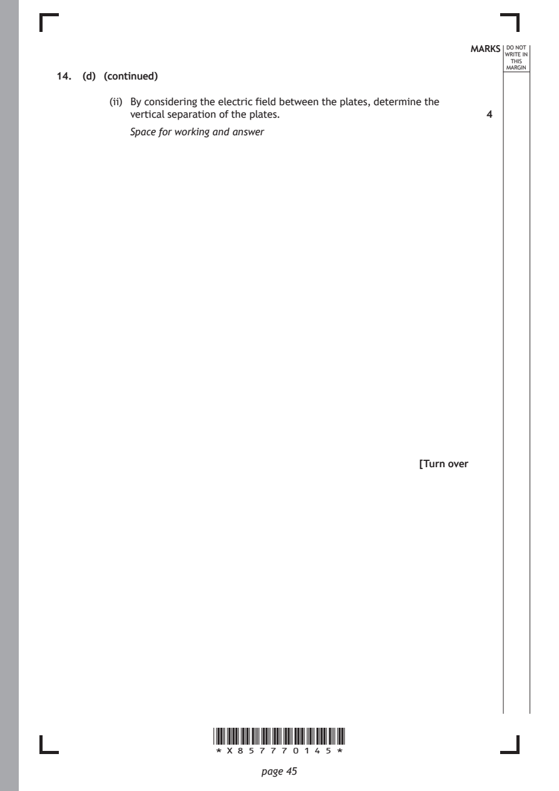
Selectable page text
MARKS _{W}^{D}_{R}^{O}_{I} _{T}^{N}OT
E IN
THIS
MARGIN
14. (d) (continued)
(ii) By considering the electric field between the plates, determine the
vertical separation of the plates. 4
Space for working and answer
[Turn over
*X857770145*
page 45PDF page 46
Question 15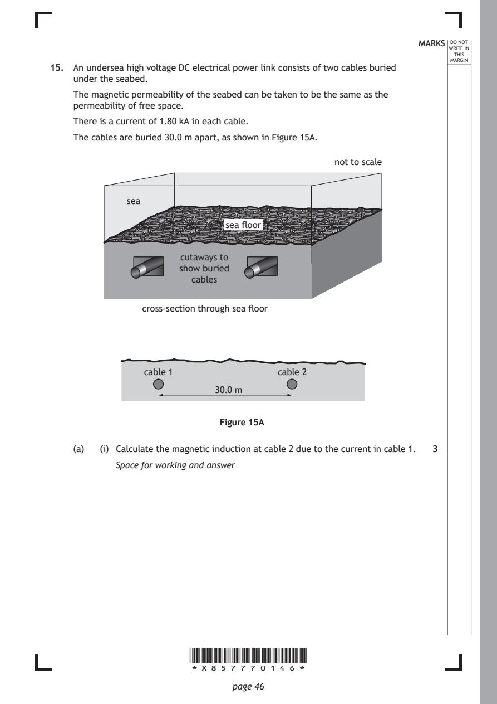
Selectable page text
MARKS _{W}^{D}_{R}^{O}_{I} _{T}^{N}OT
E IN
THIS
MARGIN
15. An undersea high voltage DC electrical power link consists of two cables buried
under the seabed.
The magnetic permeability of the seabed can be taken to be the same as the
permeability of free space.
There is a current of 1.80 kA in each cable.
The cables are buried 30.0 m apart, as shown in Figure 15A.
not to scale
sea
sea floor
cutaways to
show buried
cables
cross-section through sea floor
cable 1 cable 2
30.0 m
Figure 15A
(a) (i) Calculate the magnetic induction at cable 2 due to the current in cable 1. 3
Space for working and answer
*X857770146*
page 46PDF page 47
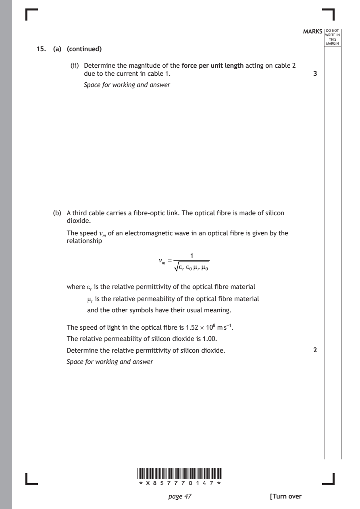
Selectable page text
MARKS _{W}^{D}_{R}^{O}_{I} _{T}^{N}OT
E IN
THIS
MARGIN
15. (a) (continued)
(ii) Determine the magnitude of the force per unit length acting on cable 2
due to the current in cable 1. 3
Space for working and answer
(b) A third cable carries a fibre-optic link. The optical fibre is made of silicon
dioxide.
The speed vₘ of an electromagnetic wave in an optical fibre is given by the
relationship
1
vₘ =
εᵣ ε₀μᵣμ₀
where εᵣ is the relative permittivity of the optical fibre material
μᵣ is the relative permeability of the optical fibre material
and the other symbols have their usual meaning.
The speed of light in the optical fibre is 1.52 × 10⁸ m s⁻¹.
The relative permeability of silicon dioxide is 1.00.
Determine the relative permittivity of silicon dioxide. 2
Space for working and answer
*X857770147*
page 47 [Turn overPDF page 48
Question 16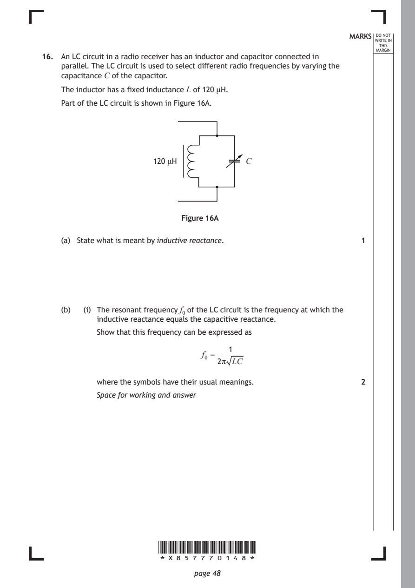
Selectable page text
MARKS _{W}^{D}_{R}^{O}_{I} _{T}^{N}OT
E IN
THIS
MARGIN
16. An LC circuit in a radio receiver has an inductor and capacitor connected in
parallel. The LC circuit is used to select different radio frequencies by varying the
capacitance C of the capacitor.
The inductor has a fixed inductance L of 120 μH.
Part of the LC circuit is shown in Figure 16A.
120 μH C
Figure 16A
(a) State what is meant by inductive reactance. 1
(b) (i) The resonant frequency f₀ of the LC circuit is the frequency at which the
inductive reactance equals the capacitive reactance.
Show that this frequency can be expressed as
1
f₀ =
2π LC
where the symbols have their usual meanings. 2
Space for working and answer
*X857770148*
page 48PDF page 49
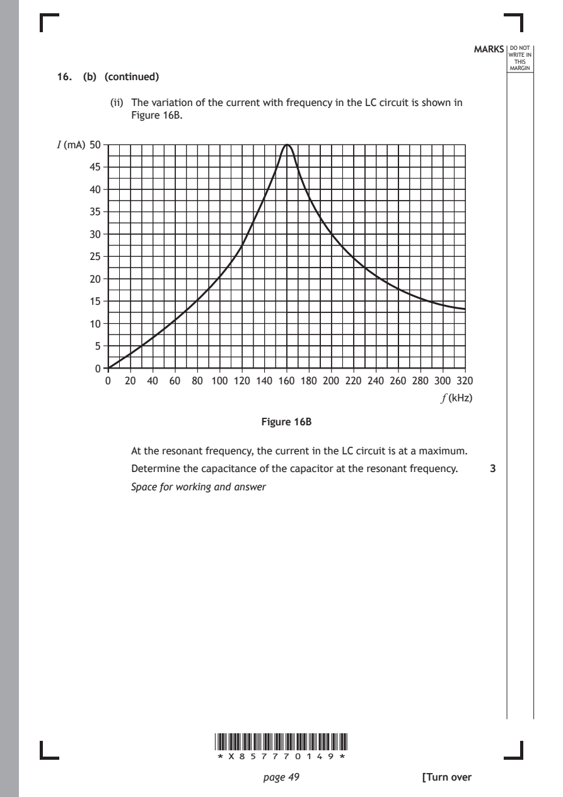
Selectable page text
MARKS _{W}^{D}_{R}^{O}_{I} _{T}^{N}OT
E IN
THIS
MARGIN
16. (b) (continued)
(ii) The variation of the current with frequency in the LC circuit is shown in
Figure 16B.
I (mA) 50
45
40
35
30
25
20
15
10
5
0
0 20 40 60 80 100 120 140 160 180 200 220 240 260 280 300 320
f (kHz)
Figure 16B
At the resonant frequency, the current in the LC circuit is at a maximum.
Determine the capacitance of the capacitor at the resonant frequency. 3
Space for working and answer
*X857770149*
page 49 [Turn overPDF page 50
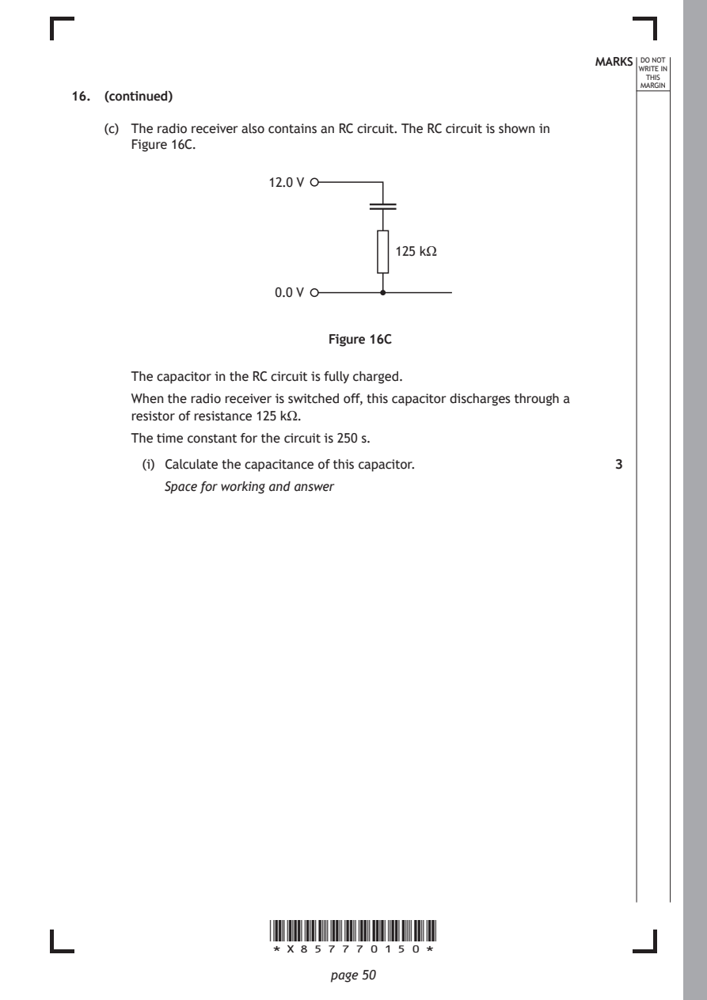
Selectable page text
MARKS _{W}^{D}_{R}^{O}_{I} _{T}^{N}OT
E IN
THIS
MARGIN
16. (continued)
(c) The radio receiver also contains an RC circuit. The RC circuit is shown in
Figure 16C.
12.0 V
125 kΩ
0.0 V
Figure 16C
The capacitor in the RC circuit is fully charged.
When the radio receiver is switched off, this capacitor discharges through a
resistor of resistance 125 kΩ.
The time constant for the circuit is 250 s.
(i) Calculate the capacitance of this capacitor. 3
Space for working and answer
*X857770150*
page 50PDF page 51
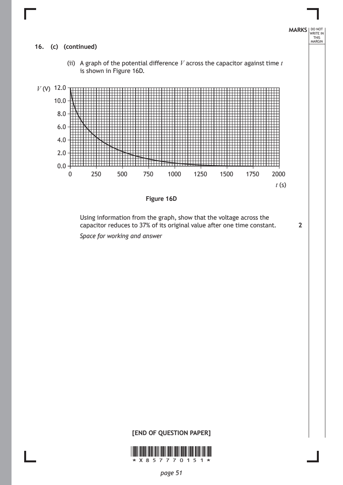
Selectable page text
MARKS _{W}^{D}_{R}^{O}_{I} _{T}^{N}OT
E IN
THIS
MARGIN
16. (c) (continued)
(ii) A graph of the potential difference V across the capacitor against time t
is shown in Figure 16D.
V (V) 12.0
10.0
8.0
6.0
4.0
2.0
0.0
0 250 500 750 1000 1250 1500 1750 2000
t (s)
Figure 16D
Using information from the graph, show that the voltage across the
capacitor reduces to 37% of its original value after one time constant. 2
Space for working and answer
[END OF QUESTION PAPER]
*X857770151*
page 51PDF page 52
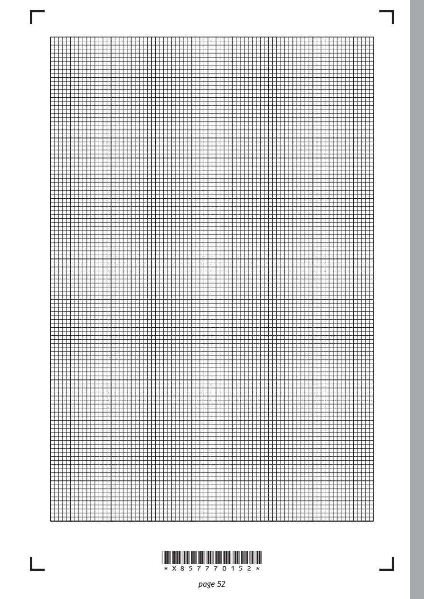
Selectable page text
*X857770152*
page 52PDF page 53

Selectable page text
*X857770153*
page 53PDF page 54
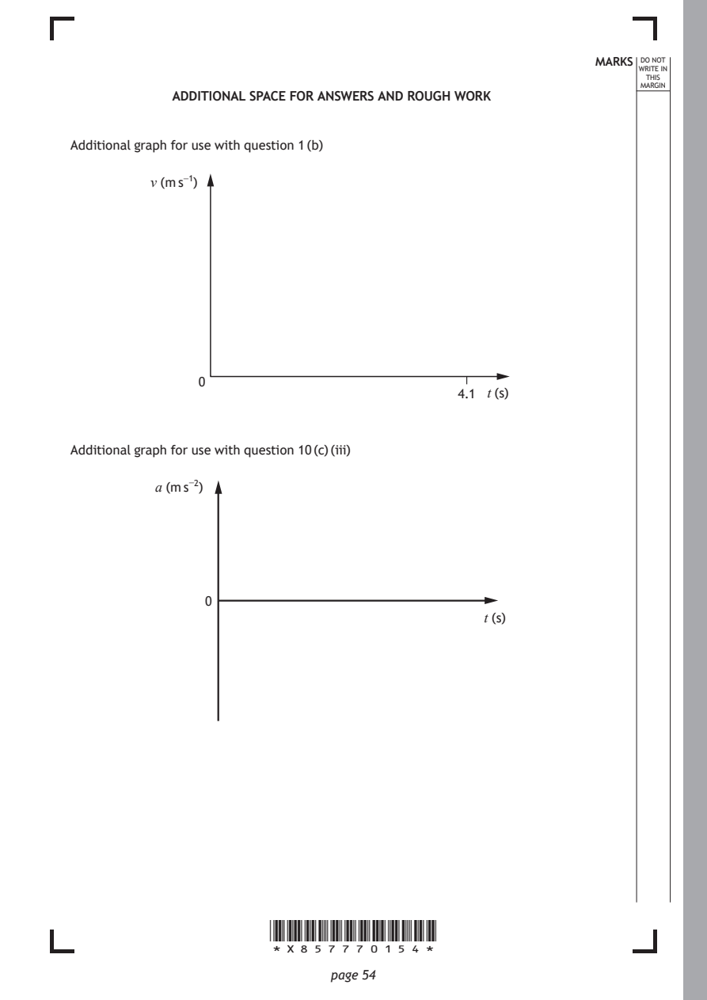
Selectable page text
MARKS _{W}^{D}_{R}^{O}_{I} _{T}^{N}OT
E IN
THIS
MARGIN
ADDITIONAL SPACE FOR ANSWERS AND ROUGH WORK
Additional graph for use with question 1 (b)
v (m s⁻¹)
0
4.1 t (s)
Additional graph for use with question 10 (c) (iii)
a (m s⁻²)
0
t (s)
*X857770154*
page 54PDF page 55
Selectable page text
MARKS _{W}^{D}_{R}^{O}_{I} _{T}^{N}OT
E IN
THIS
MARGIN
ADDITIONAL SPACE FOR ANSWERS AND ROUGH WORK
Additional diagram for use with question 14 (b)
+
−
*X857770155*
page 55PDF page 56

Selectable page text
MARKS _{W}^{D}_{R}^{O}_{I} _{T}^{N}OT
E IN
THIS
MARGIN
ADDITIONAL SPACE FOR ANSWERS AND ROUGH WORK
*X857770156*
page 56PDF page 57

Selectable page text
MARKS _{W}^{D}_{R}^{O}_{I} _{T}^{N}OT
E IN
THIS
MARGIN
ADDITIONAL SPACE FOR ANSWERS AND ROUGH WORK
*X857770157*
page 57PDF page 58
Selectable page text
[BLANK PAGE]
DO NOT WRITE ON THIS PAGE
*X857770158*
page 58PDF page 59

Selectable page text
[BLANK PAGE]
DO NOT WRITE ON THIS PAGE
*X857770159*
page 59PDF page 60
Selectable page text
[BLANK PAGE]
DO NOT WRITE ON THIS PAGE
Acknowledgement of copyright
Question 1 pixabay.com/photos/drag-racing-dragster-racing-power-3929074
Question 2 Ekaterina Pokrovsky/shutterstock.com
Question 3 Paul Vinten/shutterstock.com
Question 5 Ad-hominem/shutterstock.com
*X857770160*
page 60